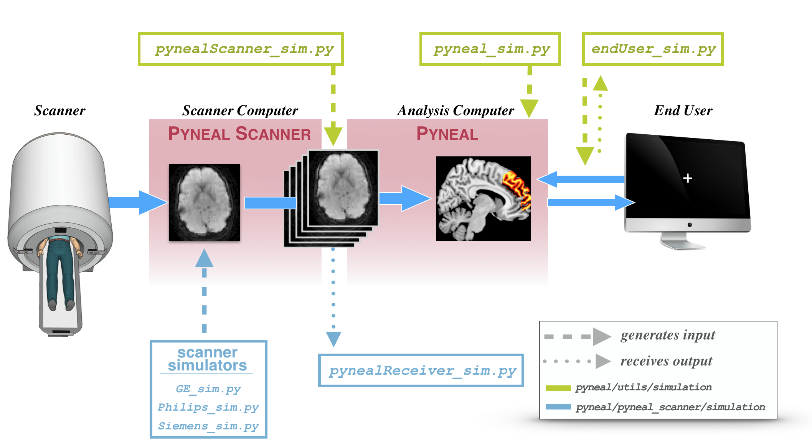

Simulations¶
Overview¶
In order to help with the initial setup, as well as test any analysis scripts and network communications later on, Pyneal includes a suite of simulation tools that mimic various inputs and outputs along the data flow path.
These tools allow you to simulate Pyneal (or Pyneal Scanner) in a modular fashion without having to run the entire pipeline. If you are troubleshooting issues, these tools are immensely helpful.
Here is a diagram highlighting the various simulation tools, and where they enter the data flow pipeline.

During an actual real-time scan, data will flow through this diagram from left to right along the blue arrows.
Simulation tools are indicated using dashed or dotted vertical lines.
-
A dashed line indicates a simulation tool that generates input. In other words, these tools mimic real data as it exists at a particular stage of the pipeline
-
A dotted line indicates a simulation tool that receives output. In other words, these tools allow you to simulate the next stage of the pipeline
Both Pyneal Scanner and Pyneal have their own set of simulation tools.
-
Pyneal Scanner simulation tools can be found in
pyneal/pyneal_scanner/simulationand are shown in light blue below the real data pipeline in the schematic. See below for more details -
Pyneal simulation tools can be found in
pyneal/utils/simulationand are shown in green above the real data pipeline in the schematic. See below for more details
Pyneal Scanner Simulation Tools¶
The Pyneal Scanner simulation tools can be found in pyneal/pyneal_scanner/simulation
- Scanner Simulators: Set of simulation scripts to mimic the behavior of real scanners with real data.
- pynealReceiver_sim.py: simulates the behavior of Pyneal (i.e. accepts incoming 3D volumes from Pyneal Scanner)
Scanner Simulators¶
Use Case: Testing Pyneal Scanner (and anything else downstream) with real data.
This will simulate the appearance of raw data coming off of the scanner. This works by pointing the simulator to a folder containing real scanner data. The simulator will copy the real data to a new directory in a way that mimics the behavior of a real scan, allowing you to test Pyneal Scanner and anything else downstream.
The format of the raw data will vary according to different scanner environments/manufacturs. Accordingly, there are multiple scripts that will simulate different types of data:
GE¶
usage: python GE_sim.py inputDir [-o outputDir -t/--TR TR]
input args:
- inputDir: path to directory containing raw slice dicom images.
- -o outputDir: path to directory where slices will be copied to [default: create new directory named
s9999in the parent directory of the inputDir] - -t/--TR TR: set the TR in ms [default: 1000]
GE scanners
In order to run this script, you must have a local directory that contains raw slice dicom files from an actual scan. If you want to fully mimic the data directory structure of GE scanners, you can create a local directory path that follows the pattern [baseDir]/p##/e##/s## where the slice images are stored in a directory named like s###, which is nested two levels deep (p###/e###) from the [basedir].
This script will copy all of the slices from the inputDir and copy them to the outputDir at a rate that is set by the TR.
After the script has completed, the outputDir will be deleted.
Philips¶
usage: python Philips_sim.py inputDir [--outputDir] [--TR]
input args:
- inputDir: path to directory containing raw slice dicom images.
- -o outputDir: path to directory where slices will be copied to [default: create new directory named
9999in the parent directory of the inputDir] - -t/--TR TR: set the TR in ms [default: 1000]
Philips scanners use XTC (eXTernal Control) to output reconstructed volumes to a directory during a scan. The files are written to a designated directory (e.g. XTC_Output), and within that directory, every series is assigned a new directory named sequentially starting with '0000'. For instance, volumes from the 3rd series will be stored like '.../XTC_Output/0002/'. This script will simulate the creation of a new series directory, and copy in PAR/REC files.
You must specify a local path to the inputDir. That is, the directory that already
contains a set of reconstructed PAR/REC files for a series (referred to as seriesDir.
To use this tool, you must specify an inputDir as the full path to the source data.
[OPTIONAL]: You can specify the full path to an output directory where the PAR/REC files
will be copied to. If you don't specify an output directory, this tool will default
to creating a new seriesDir, named '9999' saved in the parent directory of the seriesDir.
e.g. python Philips_sim.py /Path/To/My/Existing/Series/0000 --outputDir /Where/I/Want/New/Slice/Data/To/appear
if you did not specify an outputDir, new PAR/RECs would be copied to:
/Path/To/My/Existing/Series/9999
[OPTIONAL]: You can specify the TR at which new PAR/REC data is copied. Default is 1000ms.
e.g. python GE_sim.py /Path/To/My/Existing/Series/0000 --TR 2000
Siemens¶
usage:
input args:
pynealReceiver_sim.py¶
Use Case: When you want to test Pyneal Scanner without having to actually run Pyneal
This simulator will mimic the part of Pyneal that accepts incoming 3D volumes from Pyneal Scanner. This allows you to quickly test sending output with Pyneal Scanner, without having to fully run Pyneal (which entails a lot of extra overhead).
usage: python pynealReceiver_sim.py
This simulator is hardcoded to be listening for incoming data on port 5556. Make sure Pyneal Scanner is configured to use that same port number for pynealSocketPort (see Pyneal Scanner Setup)